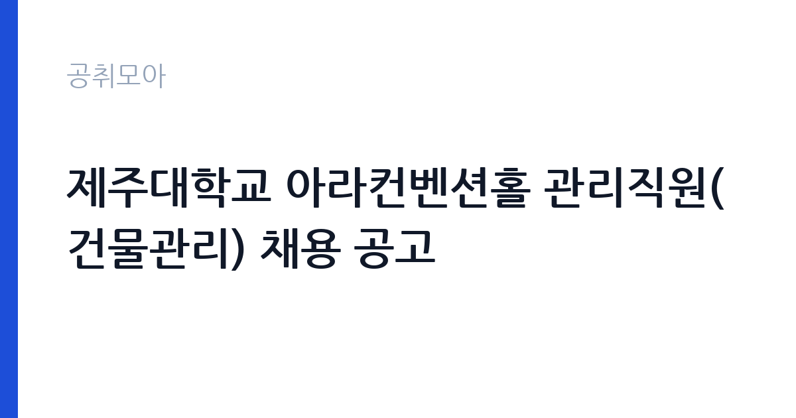

[국가기관] 제주대학교 아라컨벤션홀 관리직원(건물관리) 채용 공고
제주대학교 · 제주 · 마감 2026-11-10 (D-6) · 출처 나라일터

한눈에 보는 모집 조건
| 기관 | 제주대학교 |
|---|---|
| 공고명 | 제주대학교 아라컨벤션홀 관리직원(건물관리) 채용 공고 |
| 고용형태 | 정규직 |
| 근무지 | 제주 |
| 게시일 | 2026-11-04 |
| 마감일 | 2026-11-10 (D-6) |
지원자격, 이렇게 읽으세요
- 관리직원 1명
- 접수 ~2026-11-10 마감
- 세부 조건은 원문 공고문 확인
정규직 채용은 기간의 정함이 없는 근로계약을 전제로 합니다. 수습 기간을 두고 평가한 뒤 정규직으로 확정하는 절차가 일반적이며 기관의 인사 규정과 임금 체계를 적용받습니다. 이번 공고는 제주대학교에서 직접 진행하는 자체 전형으로, 응시자격과 제출서류는 공고문에 항목별로 제시됩니다. 이 공고는 아라컨벤션홀 관리직원(건물관리) 1명을 뽑는 채용입니다. 자격 요건은 국가공무원법 제33조 결격사유가 없고, 대한민국 국적자로서 남자는 병역을 마쳤거나 면제된 사람입니다. 아동·청소년 성 보호법에 따른 취업제한 대상이 아니어야 하고, 최근 2년 내 국가건강검진 결과에 이상이 없어야 합니다. 연령은 만 18세 이상 만 60세 미만으로 제한됩니다. 접수는 2026년 11월 4일부터 10일 18시까지 이메일로 받고, 근무지는 제주대학교 아라컨벤션홀입니다. 서류는 접수 마감 이후 보완이 되지 않으므로 자격 요건과 증빙 서류를 마감 전에 모두 갖춰야 합니다. 공고문에 명시된 우대 사항은 해당 여부를 확인해 증빙을 첨부해야 가점이 반영됩니다. 동일 직무 경력자와 경쟁하게 되므로, 관련 경험이 있다면 증명서에 업무 내용이 구체적으로 적히도록 요청하십시오.
이 공고의 포인트
이 공고의 첫 번째 포인트는 고용 형태입니다. 수습 기간 평가를 통과하면 기간의 정함이 없는 신분이 되어 고용이 안정됩니다. 두 번째는 업무 범위가 명확하다는 점입니다. 컨벤션홀 운영·건물관리 직무로 채용되므로 배치 이후 담당 업무가 크게 흔들리지 않습니다. 세 번째는 근무지입니다. 제주 지역 근무로 수도권 공고에 비해 지원자 분포가 넓지 않아 상대적으로 경쟁이 분산되는 경우가 있습니다. 근무 조건이 공고문에 구체적으로 적혀 있어 지원 전에 판단할 정보가 충분합니다. 다만 선발 인원이 1명으로 많지 않아 자격을 갖춘 지원자가 몰리면 경쟁률이 높아질 수 있습니다.
전형은 어떻게 진행되나
서류전형과 면접전형 외에 직무수행능력 평가가 붙는 경우가 있습니다. 평가 방식은 공고문에 구체적으로 적혀 있으므로 어떤 항목에 배점이 높은지 먼저 파악하십시오. 면접에서는 지원 동기보다 실제 업무 경험에 대한 질문이 많고, 답변의 구체성이 평가를 가릅니다. 전형 일정은 서류 마감 이후 빠르게 진행되므로 연락 가능한 번호를 정확히 기재하고 문자와 메일을 수시로 확인해야 합니다. 최종 단계에서는 결격사유 조회와 신체검사가 진행됩니다. 서류 단계에서 요건을 충족하지 못하면 이후 전형을 준비할 기회가 없으므로, 제출 전 요건 대조를 한 번 더 하는 것이 좋습니다.
원문에서 확인한 전형 방식
1. 채용분야 및 인원 : 관리직원(건물관리) 1명 2. 채용 자격 ○ 국가공무원법 제33조 결격사유에 해당되지 않는 자 ○ 대한민국의 국적을 가진 자(외국인 또는 이중국적자가 아닌 자)로 남자일 경우 병역을 필하였거나 면제된 자 ○ 「아동, 청소년의 성 보호에 관한 법률」제56조에 따른 취업제한 대상에 해당하지 아니한 자 ○ 최근 2년내 실시한 건강검진기본법에 따른 국가건강검진 결과에 이상이 없는 자 ○ 만 18세 이상 ~ 만 60세 미만인 자 3. 업무 내용 : 아라컨벤션홀 객실 및 회의시설 운영, 안내, 예약 관리 등 4. 근무지 : 제주대학교 아라컨벤션홀 5. 접수기간 : 2026. 11. 4.(수) ～ 2026. 11. 10.(화) 18:00 6. 접수방법 : E-mail 접수 (leyj2002@jejunu.ac.kr) 7. 합격자 발표(예정) : 2027. 12. 1.(월) 8. 공고문 및 지원서 양식 : 첨부파일 참고 9. 담당부서(연락처) : 제주대학교 경영혁신지원실(064-754-2147) 10. 기타사항 : 진행상황에 따라 면접시험 및 최종합격자 발표 등 일정이 변경될 수 있으며, 기타 자세한 사항은 공고문을 참고하시기 바랍니다.
이런 분께 추천해요
- 숙박·회의시설 운영 또는 예약 관리 경험이 있는 분
- 행사 일정에 따른 초과 근무를 수용할 수 있는 분
- 이메일 접수로 기한 내 서류를 제출할 수 있는 분
지원 전 체크리스트
- 응시자격 요건과 경력 기준을 충족하는가 — 경력은 증명서로 입증해야 합니다
- 수습 기간과 정규직 전환 조건을 확인했는가
- 제출서류 목록을 모두 준비했는가 — 누락 시 서류 단계에서 탈락합니다
- 접수 마감 2026-11-10 이전에 접수 방식을 확인해 제출했는가
모집 일정과 제출 타이밍
접수 마감은 2026-11-10이고 공고는 2026-11-04에 게시되었습니다. 준비 기간 6일 안에 서류 작성, 증빙 발급, 접수를 모두 마쳐야 하므로 주말을 포함해 일정을 미리 나누는 것이 좋습니다. 특히 경력 기술서나 직무수행계획서를 요구하는 공고는 작성에 시간이 걸리므로 첫날 초안을 잡으십시오. 서류 합격자 발표와 면접 사이 간격이 짧은 경우가 많아 면접 예상 질문은 서류 제출 전에 정리해 두는 편이 유리합니다. 마감 직전에는 접속이 몰리므로 여유를 두고 제출하십시오. 마감 이후에는 어떤 사유로도 접수가 인정되지 않으므로 하루 전 제출을 목표로 하십시오. 제주 근무지는 도내 이동 거리가 길고 숙소 제공 여부가 총비용에 큰 영향을 줍니다. 마감까지 일주일 안팎이 남아 서류 준비와 증빙 발급을 병행해야 합니다. 선발 인원이 한두 명 수준이라 지원자 개개인의 서류 완성도가 그대로 평가에 반영됩니다.
직무 이해하기: 국가기관
제주대학교 아라컨벤션홀은 객실과 회의시설을 운영하는 부속 시설입니다. 관리직원은 객실과 회의실 운영, 예약 관리, 이용객 안내를 맡습니다. 예약 현황을 확인해 객실과 회의실을 배정하고, 행사 일정에 맞춰 준비와 정리를 진행합니다. 시설과 비품의 이상을 확인해 정비를 요청하고, 이용객의 문의와 요청에 대응합니다. 행사가 있는 날에는 설치와 철수 작업이 붙어 근무 시간이 늘어날 수 있습니다. 업무 강도와 근무 시간대는 부서 배치에 따라 달라지므로 면접에서 확인하는 것이 가장 정확합니다.
자기소개서 작성 팁
지원서는 시설 운영과 예약 관리 경험을 구체적으로 쓰는 것이 효과적입니다. 운영한 객실이나 회의실 수, 처리한 예약 건수, 진행한 행사 규모를 수치로 제시하십시오. 이용객 응대에서 갈등을 줄인 사례가 있다면 강한 소재입니다. 제주대학교 시설에서 근무하게 된다는 점을 이해하고 있다는 문단을 넣으면 준비도가 드러납니다. 문항별 글자 수 제한을 먼저 확인하고, 각 문항의 첫 문장에 결론을 배치하는 방식이 읽기 쉽습니다. 지원 동기는 기관의 어떤 사업에 기여하겠다는 한 문장으로 시작하고, 이어서 본인의 경험을 근거로 붙이십시오. 감점을 피하려면 다른 기관에 보낼 수 있는 범용 문장을 그대로 쓰지 않는 것이 중요합니다. 기관 이름과 사업명이 문장 안에 자연스럽게 들어가야 준비도가 드러납니다.
면접 준비 포인트
면접에서는 시설 운영과 응대 경험을 확인합니다. 예약이 겹쳤을 때 어떤 기준으로 조정할지, 이용객이 시설 문제를 제기하면 어떻게 처리할지 묻습니다. 객실·회의시설 운영 경험이 있다면 담당했던 규모와 운영 방식을 구체적으로 답하십시오. 행사 일정에 따른 초과 근무를 감당할 수 있는지도 확인 대상입니다. 답변은 상황, 판단, 조치의 순서로 정리하면 전달이 분명해집니다. 모르는 질문에는 모른다고 밝히고 확인 방법을 제시하는 편이 억지 답변보다 낫습니다. 마지막에는 근무 의사와 함께 2026-11-10 이후 일정에 언제든 응할 수 있다는 점을 전달하십시오. 본인 경험을 말할 때는 기간, 역할, 결과를 순서대로 정리해 두면 질문이 바뀌어도 활용할 수 있습니다.
급여·근무조건 읽는 법
국립대학 관리직원은 대학 자체 임금 기준을 적용받고, 기본급에 정액급식비·명절휴가비 같은 수당이 더해집니다. 이 공고는 처우 금액이 본문에 제시되지 않았으므로 공고문의 처우 항목과 근로계약 조건을 확인해야 합니다. 확인되지 않은 금액은 이 글에서 제시하지 않습니다. 2026년 적용 최저임금은 시급 10,320원, 월 환산 2,156,880원(주 40시간·209시간 기준)입니다. 고용노동부 고시 제2025-47호로 확정된 금액입니다. 공고문에 금액이 제시되지 않은 항목은 원문 보수표나 처우 설명에서 확인해야 하며 확인되지 않은 수치는 쓰지 않는 것이 원칙입니다. 비교할 때는 월 급여뿐 아니라 상여·명절휴가비·복지포인트·초과근무수당까지 포함한 연간 총액으로 계산하십시오. 기간제라면 계약 기간 동안의 총액을, 무기계약이라면 호봉 상승과 정년까지의 누적 소득을 기준으로 판단하는 편이 정확합니다.
자주 묻는 질문
- 선발 인원은 몇 명인가요?
공고문 기준 1명입니다. 직종별로 인원이 나뉘는 경우가 있으니 모집분야 항목을 함께 확인하십시오. - 근무지는 어디인가요?
제주 지역의 제주대학교 소속 근무지입니다. 세부 주소와 출퇴근 조건은 원문 공고문에서 확인할 수 있습니다. - 보수는 얼마인가요?
채용 신분(정규직)과 기관 임금 규정에 따라 정해지며 구체적인 금액은 공고문 처우 항목에 제시됩니다. 금액이 공개되지 않은 경우에는 원문의 보수표를 확인하십시오.
함께 보면 좋은 공고
[국가기관] 2026년 제7회 광양우체국 상시계약집배원 채용 공고 — 마감 2026-11-12[국가기관] 제8회 서천우체국 기간제 상시계약집배원(농어촌) 채용 재공고 — 마감 2026-11-12[국가기관] 해병대 덕산대 체력단련장(경기 화성) 공무직근로자 (경기담당) 채용 공고 — 마감 2026-11-13출처: 나라일터 공개정보를 바탕으로 공취모아가 정리한 안내글입니다. 모집 조건·일정은 변경될 수 있으니 지원 전 반드시 원문 공고문을 확인하세요. 본 글은 정보 제공용이며 합격을 보장하지 않습니다.